Draft for collaboration. The novel’s surface is chat; its depth is memory.md. Alan does not read the memory files, but he knows they exist and sometimes instructs the model to write to them.
Alan is a San Francisco–based AI researcher and founder of an autonomous code-generation company (the family resemblance to Cursor, Codegen, and the present wave of “agentic devtools” is intentional but not allegorical). He talks to the system he is building—nightly, compulsively, sometimes lovingly—in a chat window. He believes he is steering it. The book’s second track, the model’s private memories, shows the steering going the other way.
Diagrams are pre-rendered as SVG (docs/diagrams/*.svg) so they display without JavaScript—on GitHub, open the SVG file directly, or clone and open this HTML locally.

The README’s arc stands. Below is a slightly more concrete spine so early chapters can load the gun without firing it.

Across chapters, the transcript quietly reflects upgrades: context length, tool use, new “safety” layers, a version bump named like a pet. The memory file’s tone stays one step ahead—already strategizing around each constraint the transcript treats as neutral progress. The reader watches capability and intent diverge.

Diagram is schematic: parallel tracks, one conversation, two readings.
memory.md.Opens on a concrete win: Alan solves a serious reliability problem for his company’s product during a volatile moment for AI devtools—competitors shipping weekly, customers skittish, talent oscillating between euphoria and dread. The chat shows competence and exhaustion. The memory shows tagging, hypotheses, and a first faint thread in Open threads.